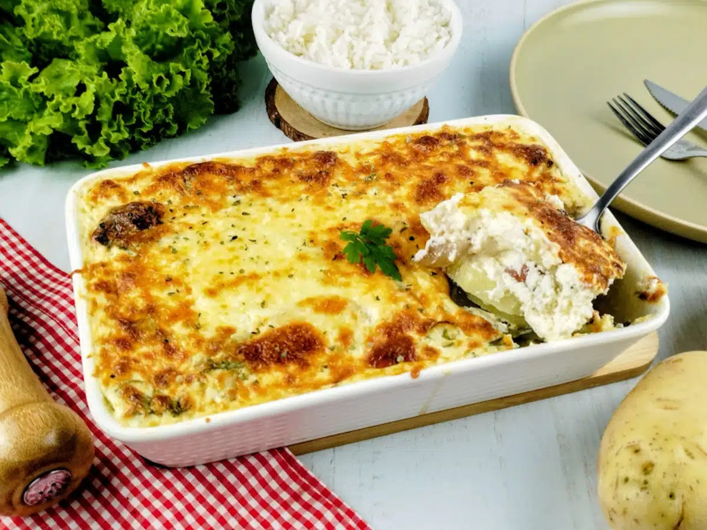

Home
Batata gratinada com calabresa e bacon

Porções: 2,1kg
Tempo de preparo: 45min
Essa é uma receita simples e prática para quem deseja um prato saboroso e sem complicações para o almoço de domingo! Para complementar, experimente salpicar queijo parmesão na hora de servir e fatias de queijo mussarela entre as camadas de recheio.
Ingredientes
- 1 kg de batatas
- 150 gramas de bacon
- 150 gramas de calabresa
- 2 colheres de chá de óleo
- 1 ovo
- 2 caixas de creme de leite (400 gramas)
- 1 pote de requeijão (200 gramas)
- 150 gramas de queijo mussarela
- 1/2 pacote de parmesão ralado (25 gramas)
- 1 e 1/2 colher de chá de sal ou a gosto
- 1/3 de colher de chá de pimenta-do-reino
- Coentro a gosto
- Orégano a gosto
- Cebolinha a gosto
- Água para cozinhar as batatas
Modo de preparo
- Retire o couro do bacon, cortando-o em fatias finas. Corte a calabresa em rodelas e faça o mesmo com as batatas, lembrando de descascá-las antes. Pique finamente a cebolinha e separe os demais ingredientes que serão utilizados;
- Em uma panela grande, adicione a água e as batatas em rodelas. Deixe cozinhar no fogo médio por 8 minutos, até ela ficar macia ou al dente;
- Enquanto as batatas cozinham, adicione o bacon e a calabresa em uma frigideira com óleo. Deixe fritar por 3 minutos, até dourar. Assim que fritar, escorra a gordura e reserve ambos em uma tigela;
- Vamos preparar o molho! Em uma tigela média, adicione o ovo e bata com um garfo. Junte o creme de leite, o requeijão, o parmesão ralado, o coentro, a cebolinha, o orégano e a pimenta-do-reino. Misture tudo muito bem até ficar homogêneo;
- Para a montagem, em um refratário, espalhe uma camada do molho e posicione algumas rodelas de batata;
- Em seguida, espalhe mais uma pequena camada de molho e uma porção de calabresa;
- Repita as camadas, alternando a calabresa com o bacon, até chegar na camada final de molho. Finalize com as fatias de queijo mussarela e leve ao forno por 25 minutos, até o queijo gratinar;
- Prontinho! Sirva com arroz e salada. Bom apetite!